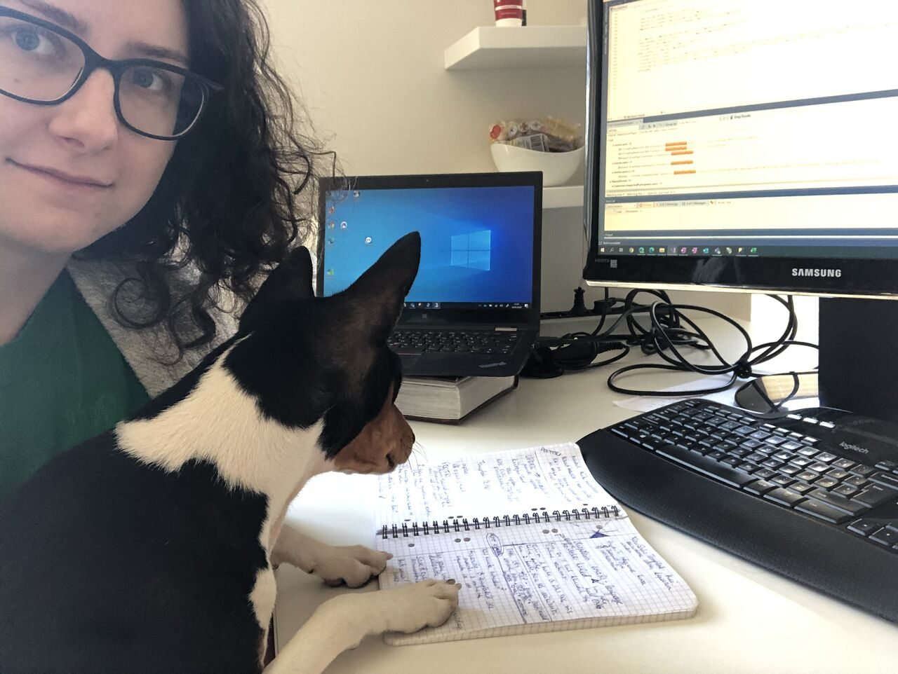
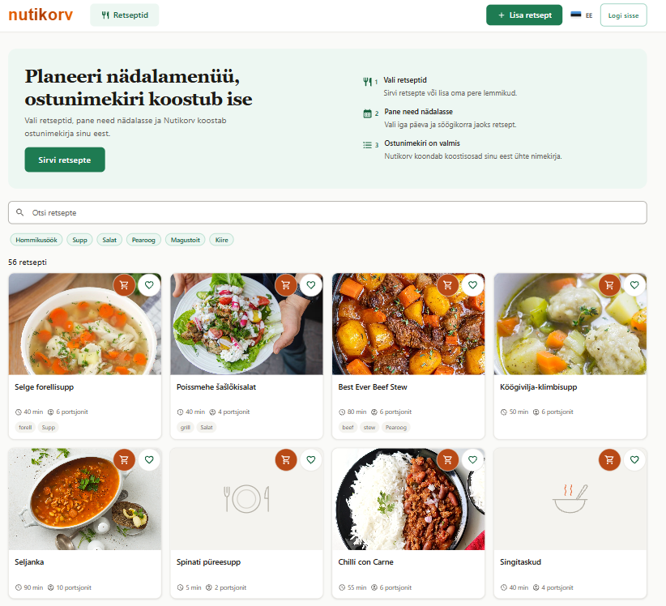

Kohtumise märkmed
- Praegu
- Märkmed jäävad korrastamata, tegevused ja memo tuleb hiljem nullist kokku panna.
- Koos tehtud lahendus
- Märkmetest valmivad kokkuvõte, tegevuste nimekiri ja memo.
- Sina otsustad
- Mida parandada, salvestada või saata.
1:1 abi väikeettevõtjale. Saad juhised või ehitan lahenduse sinu eest valmis.
3 kohtumist · 315 €
Sobib ülesandele, mille tahad päriselt tööle saada. Teeme selle koos valmis ja katsetame läbi.
90 minutit · 110 €
Valime ühe ülesande ja sobivad töövahendid. Lahkud selge otsuse ja juhistega; kui ülesanne on väike, proovime selle kohtumisel ka valmis teha.
Kirjelda ülesannetAlates 300 €
Sa tead, mida vajad, aga ei taha ise ehitada. Lepime kokku mahu ja hinna, mina ehitan lahenduse valmis.
Töö piirid lepime enne alustamist kokku. Kolmandate osapoolte teenused (nt ChatGPT kuupakett) ei sisaldu hinnas.
OÜ Adagio ei ole käibemaksukohustuslane.
Tööriista ei pea sa teadma. Alustame sellest, mis sinu töös kõige rohkem aega võtab.
Vaatame koos üle võimaliku kasu, keerukuse, kulud ja andmeriskid.
Kickstartis saad juhised (väikese ülesande teeme koos valmis). Autopilotis ehitan lahenduse mina ja kirjutan kasutusjuhendi.

Umbes seitse aastat tarkvaraarendust. Kasutan AI-d oma töös ja oskan hinnata, millal lihtsam lahendus on parem.
Ühendan tehnilise ja mittetehnilise maailma. Õigeid tehnilisi küsimusi ei pea sa oskama esitada.
Ehitasin Nutikorvi nullist päris tooteks. Hea lahendus peab olema arusaadav, kasutatav ja päris elus hallatav.
Vahel on parem vastus kontrollnimekiri, telefoni automation või lihtsalt selgem töökorraldus.

Ei. Enamik näiteid siin lehel on tööalased, aga sama loogika töötab ka kodus korduvate asjadega - koolikalender sinu enda kalendrisse, perelogistika ja korduvad meeldetuletused või NFC-tag, mis annab partnerile teada, et koer sai süüa. Kirjelda oma olukorda ja ma ütlen, kas seda tasub automatiseerida.
Ei. Võime alustada täiesti algusest. Olulisem on see, et sul on mõni päris ülesanne, mida soovid lihtsamaks teha.
Ühest kohtumisest piisab tavaliselt selleks, et valida ülesanne ja sobivad töövahendid ning saada juhised, mille järgi saad edasi minna. Kui tahad töövoo koos minuga päriselt tööle saada, sobib kolme kohtumise pakett. Kui tahad, et ehitan selle sinu eest valmis, sobib Autopilot.
Autopilotis jah. Teen kokkulepitud tehnilised seadistused ja panen töövoo sinu kasutatavate tööriistadega tööle. Kolme kohtumise Kickstartis teeme seda koos ja sina oled laua taga. Ühe kohtumise Kickstartis saad juhised, mille järgi teed ise. Kontrollime tulemuse alati koos üle.
Jah, mõnel tööriistal võib olla kuutasu või kasutuspõhine hind. Enne valimist vaatame selle koos üle.
Vaatame enne seadistamist üle, millist infot võib valitud tööriista sisestada, millist mitte ja kas andmeid saab anonüümseks muuta. Kõiki tööülesandeid ei ole mõistlik AI-tööriista suunata.
Ütlen seda ausalt. Vahel on parem lahendus todo-nimekiri, meeldetuletus või töökorralduse muutmine.
Kohtumise saab teha videokõnena või kokkuleppel kohapeal. Töö toimub eesti või inglise keeles.
Vastan tavaliselt 1-2 tööpäeva jooksul.
Sinu andmeid kasutan ainult päringule vastamiseks ja võimaliku koostöö ettevalmistamiseks. Loe privaatsustingimusi.